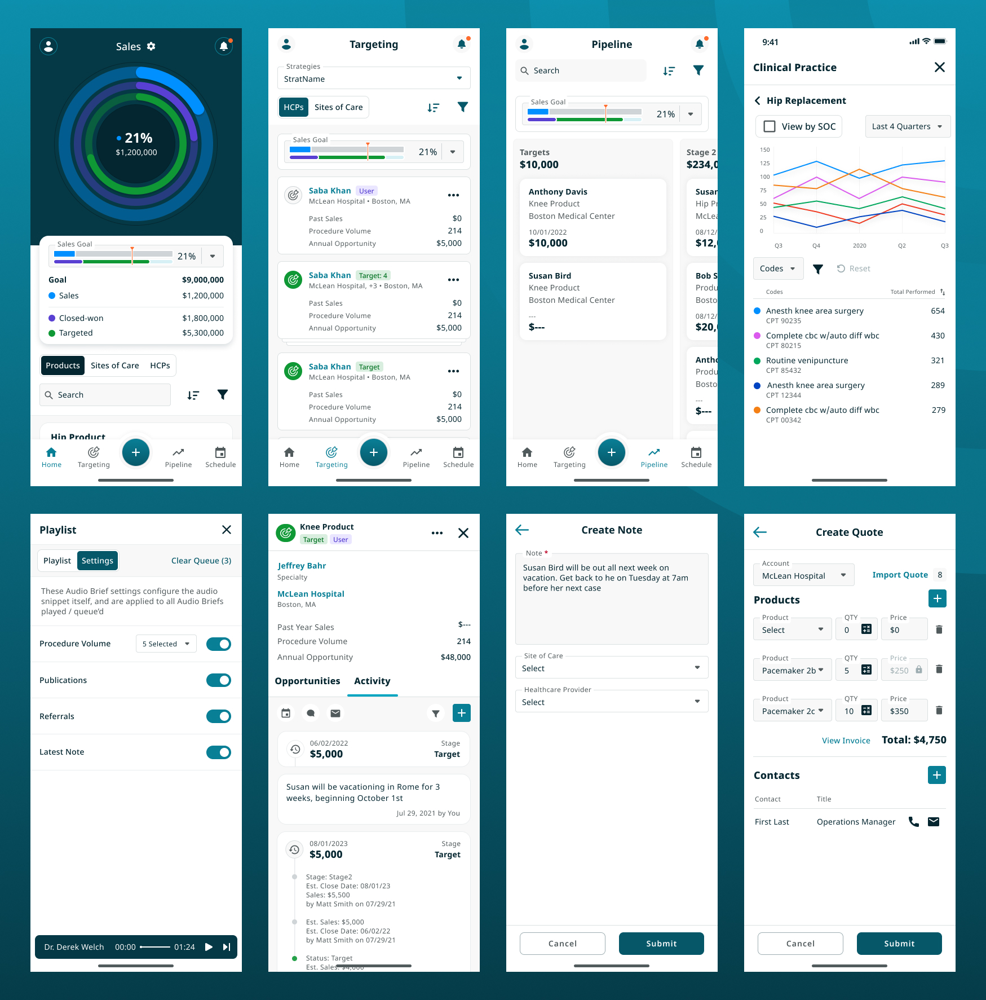
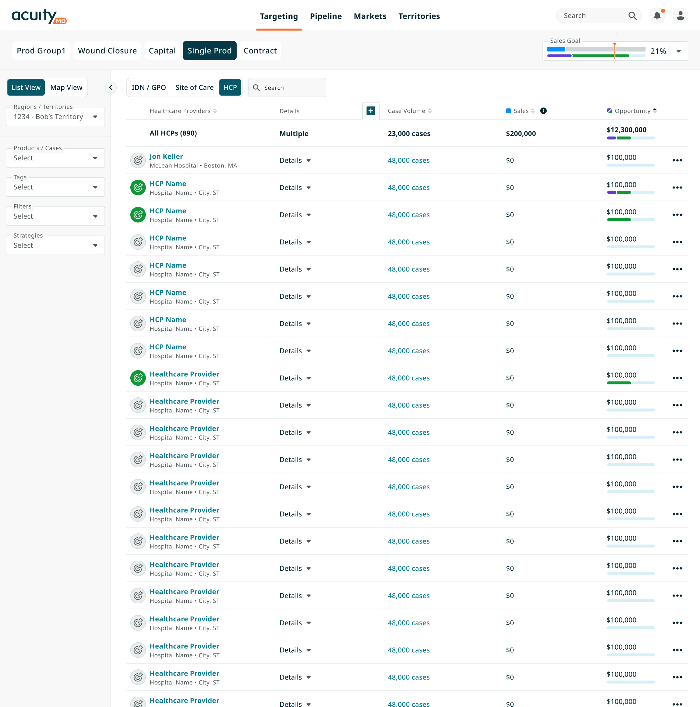
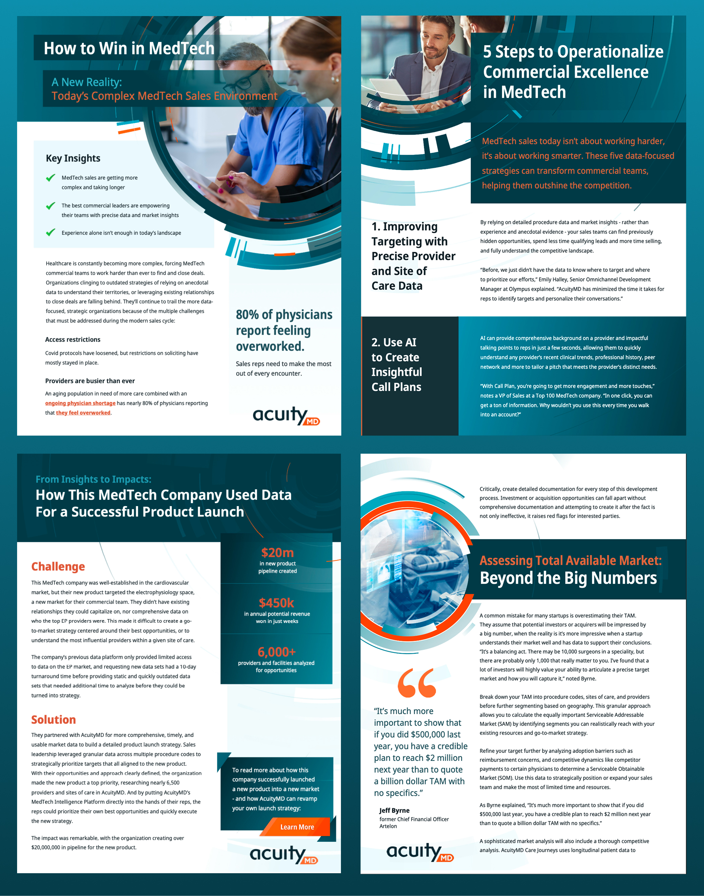
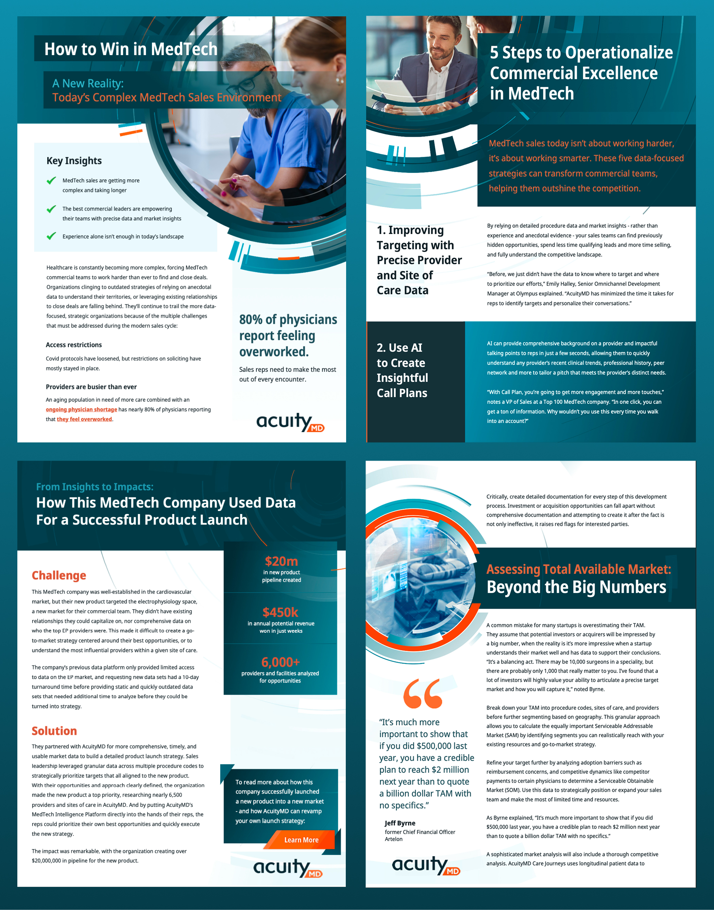

AcuityMD
Design Work
Design Work
I was the first design hire at AcuityMD and it remained that way for over the first two-ish years. The product evolved from a simple single page app to having multiple modules for various personas in the medical device sales space. The primary persona we focused on was the sales rep, building out targeting, healthcare provider (HCP) and site of care (SoC) (hospital, surgery center, etc.) profiles which contain multple modules, as well as pipeline to manage opportunties. Additionally we built out some functionality for managing the whole sales organization with territories, which allows a user to break up the country into business units, regions and individual territories as well as and markets which is where products are defined along with the medical codes that are used to track volume against an HCP or SoC.
I have millions of desktop screens but to keep it short here is a version of targeting. A sales rep can target a SoC, HCP or a larger group like an IDN, for one or many products that can be grouped together in a view. The list is defaulted to sort by case volume so a rep can see the top doctors or surgeons in their territory doing procedures that use the companies products. Of course there is more to targeting than just volume. There are multiple ways to filter down the list as well as data sources to make the sale happen on targeting and on the profiles. A sales rep job is not just selling to new targets but is upselling and managing existing customers, so it's helpful to know a doctor's volume and how many products they should be using and compare that to sales. Lastely, a sales rep's main goal is to hit their quota so it's important to show actual sales against the current run rate of existing customers and deals in the pipeline, so know in advance if that quoata will get hit or not.
Along with building out the interface I also have been working on branding, advertising and collateral material. Here are some examples of ads I've created for internal content promotion, events we host or are going to and feature promotion.

Postcards and physical printouts? Yep, even designed a bunch of physical collateral to our sales reps to use and handoffs, booth and signage design and of course post cards and product pages to provide at our booths.
 

Besides working on the application, advertising and branding I also worked on all the branding and signage for the event we put on each year called Flywheel. Started with the logo and then built out all website, slides, posters, floor decals, merch, and everything else you could think of.